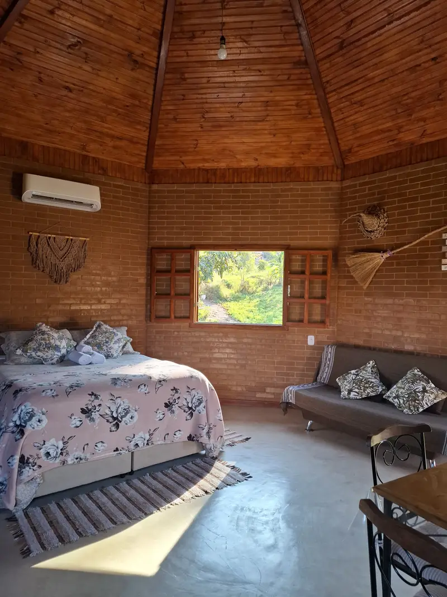
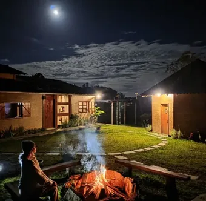
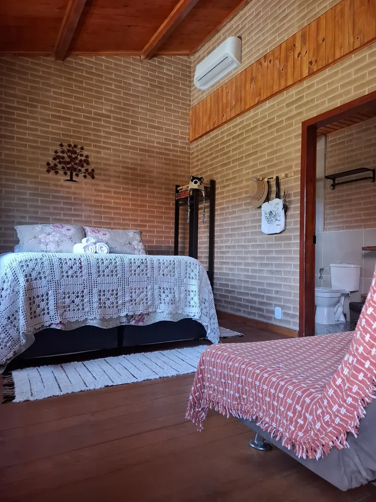
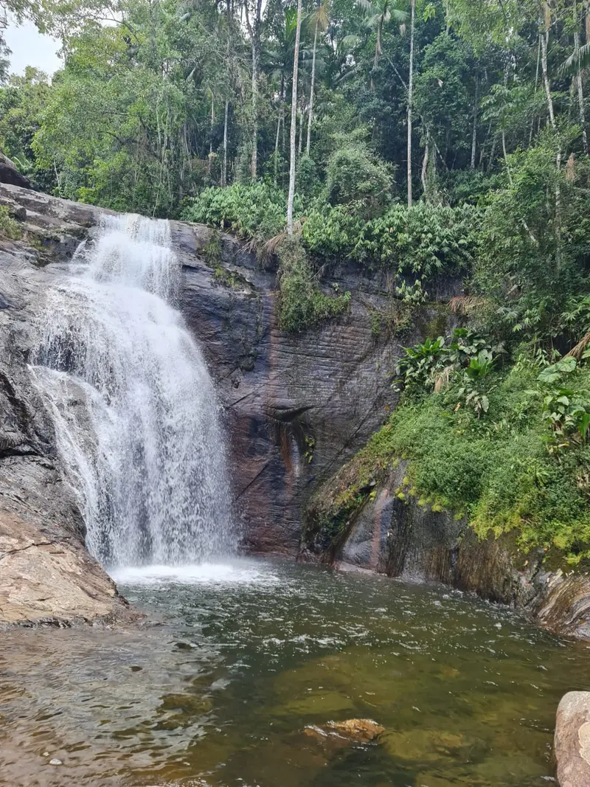
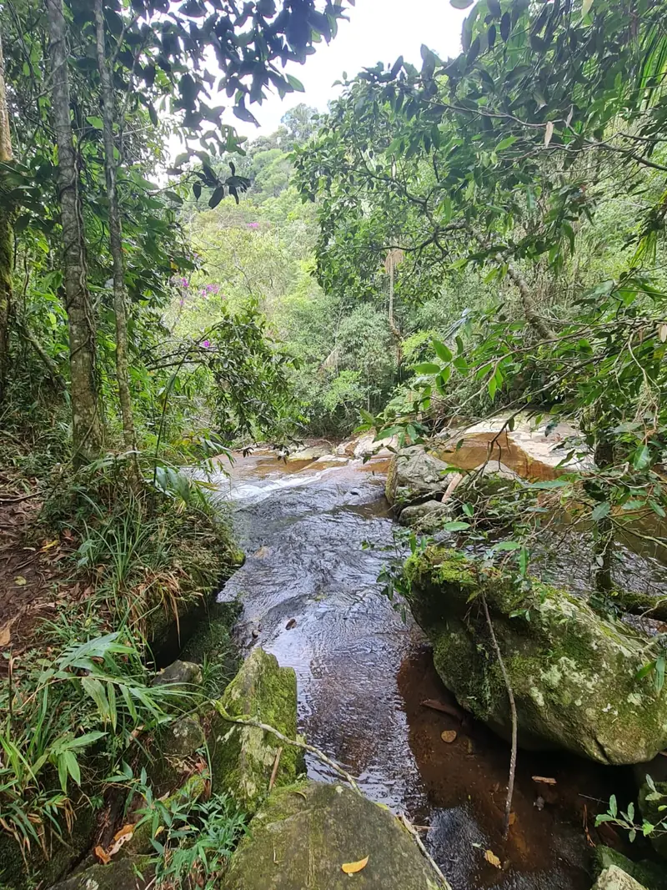
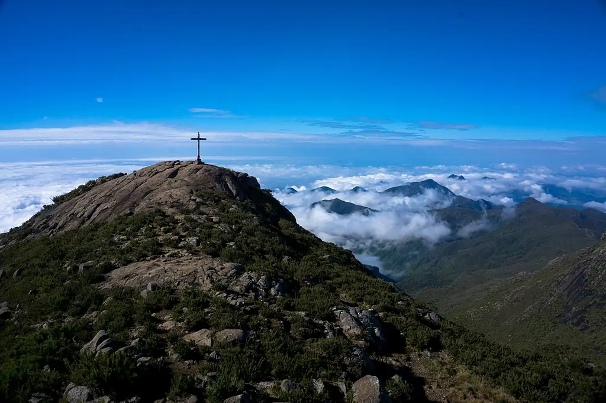
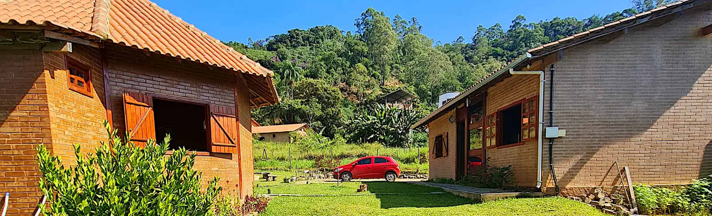
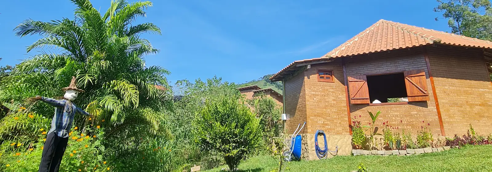

Uma hospedagem construída pensando no meio ambiente
Situada dentro da Vila Mágica de Patrimônio da Penha, aos pés do Parque Nacional do Caparaó, a Casa do Chapéu nasceu do desejo de receber bem sem pesar na natureza.
As cabanas são feitas de tijolos ecológicos, com biodigestor, geração de energia solar e um quintal repleto de árvores nativas e frutíferas. É o refúgio de quem busca silêncio, montanha e o cheiro de mata depois da chuva — sem abrir mão do conforto.
Tijolos ecológicos
Energia solar
Biodigestor
Árvores nativas e frutíferas


Nossas cabanas
Dois refúgios, um mesmo aconchego
Madeira, tijolo ecológico e tudo o que você precisa para descansar de verdade: camas muito confortáveis, ar-condicionado, aquecedor e torneiras aquecidas.

Cabana Lua
Cabana Lua
Para até 6 pessoas, com cozinha completa — fogão por indução, forno elétrico e copa/cozinha com mesa para seis lugares. Tijolo ecológico, decoração em artesanato regional e o aconchego que a serra pede nas noites frias.
Até 6 pessoas
Cozinha completa
Fogão por indução
Forno elétrico
Geladeira e micro-ondas
Coador de café, liquidificador, sanduicheira e ferro
Para até 4 pessoas, com teto octogonal de madeira, cozinha equipada com fogão a gás de duas bocas, geladeira, micro-ondas e utensílios, e uma deliciosa banheira vitoriana de água aquecida em espaço reservado a céu aberto — banho de banheira olhando o céu da serra.
Até 4 pessoas
Cozinha com fogão a gás
Geladeira e micro-ondas
Coador de café, liquidificador, sanduicheira e ferro
Cada detalhe foi pensado para o seu descanso — da localização privilegiada às torneiras aquecidas.
Localização privilegiada
Aos pés do Parque Nacional do Caparaó, pertinho das cachoeiras e do centrinho da vila.
Estrutura sustentável
Tijolos ecológicos, biodigestor e energia solar, integrados à natureza do entorno.
Fogueira no quintal
Noites de céu estrelado ao redor do fogo, com espaço verde e muito silêncio.
Camas muito confortáveis
Colchões, roupa de cama completa, travesseiros e toalhas limpinhos e macios — é só chegar e descansar.
Cozinha nas duas cabanas
Geladeira, micro-ondas, coador de café, liquidificador, sanduicheira e utensílios — dá para preparar a própria refeição.
Torneiras aquecidas
Água quentinha nas pias — aquele cuidado raro que faz diferença no frio da montanha.
Wi-Fi, ar e aquecedor
Internet, ar-condicionado e aquecedor elétrico em todas as cabanas, o ano inteiro. Tomadas 220V — confira seus aparelhos antes de ligar.
Estacionamento no local
Vaga gratuita dentro da propriedade, a poucos passos da sua cabana.
Trilhas ecológicas
Caminhos em meio à mata nativa saindo do entorno da hospedagem.
Pode trazer o pet
Aceitamos animais de estimação — combine com a gente pelo WhatsApp ao reservar.
Experiências
A montanha, a água e o silêncio
Patrimônio da Penha é ponto de partida para cachoeiras, trilhas na mata nativa e o nascer do sol mais alto do Espírito Santo.

a ~250 m
Cachoeiras do Arco-Íris e da Purificação
Águas límpidas de montanha a poucos minutos a pé da sua cabana. Dá para ir de chinelo e voltar para a fogueira.

mata nativa
Trilhas ecológicas
Caminhos sombreados em meio à mata levam você até as quedas d'água e mirantes da vila.

Parque Nacional do Caparaó
Pico da Bandeira
O terceiro ponto mais alto do Brasil está logo ali: nascer do sol acima das nuvens a 2.892 metros.
Vila Mágica
Banhos de cachoeira e centrinho
Poços naturais para mergulhar e, à noite, os restaurantes da vila: Destino e Flores e Sabores.

“Lugar limpo, cheiroso, tranquilo. Ótimo para quem realmente deseja descansar.”
Andressa — hóspede via Airbnb
Localização
No coração da Vila Mágica
EndereçoRua do Chapéu, S/N — Patrimônio da Penha, Divino de São Lourenço · ES
CachoeirasArco-Íris e Purificação a cerca de 250 metros, por trilhas na mata nativa
Parque Nacional do CaparaóAos pés do parque, com acesso ao Pico da Bandeira
Centrinho a péRestaurantes Destino e Flores e Sabores a cerca de 300 metros — veja onde comer
De Vitória em 4h a 4h30Todo o trajeto asfaltado, por Cachoeiro, Alegre e Celina — veja as duas rotas
Como chegar
Todo o caminho é asfaltado
De Vitória são entre 4h e 4h30 de viagem pela BR-101, passando por Cachoeiro de Itapemirim, Alegre e Celina. Dá para sair na sexta à tarde e chegar por volta das 22h — a tempo de jantar no centrinho.
Em Celina, à direita no semáforo
Por Ibitirama
Segue por dentro de Ibitirama até Patrimônio da Penha. No caminho dá para parar na Cachoeira da Fumaça, um dos cartões-postais da região.
Escolha este se quiser passeio no trajeto.
Em Celina, seguindo reto
Por Guaçuí
Passa por Guaçuí, Dores do Rio Preto e Mundo Novo. Guaçuí tem a melhor estrutura do trajeto: comércio, restaurantes, lanchonetes e hospital.
Escolha este se precisar abastecer, comer ou resolver algo.
Os dois caminhos levam o mesmo tempoEntre 4h e 4h30 saindo de Vitória, ambos com paisagens muito bonitas. A escolha é pelo que você quer no caminho, não pela pressa.
Vindo do Rio de Janeiro ou de MinasO acesso é por Mundo Novo, chegando direto a Patrimônio da Penha.
Asfalto do começo ao fimNenhuma das rotas tem trecho de estrada de terra. Carro comum chega sem dificuldade.
A faixa de 4h a 4h30 é o que costuma dar na prática, variando com o trânsito na BR-101 e com as paradas no caminho. Vale conferir no seu app de navegação no dia da viagem.
Onde comer e tomar café
A vila tem mesa boa e café premiado
Quatro opções a pé, do hambúrguer na nossa rua ao jantar sem pressa. E duas cafeterias a poucos minutos de carro, uma delas campeã nacional.
A pé · na Rua do Chapéu
Pico Burger Animado
Burgueria artesanal na nossa própria rua, a poucos metros — hambúrguer artesanal e porções, perto da subida das cachoeiras.
Vindo no meio da semana? Sexta e sábado a vila está toda aberta. Já na terça-feira só o Destino funciona, até as 20h — por isso as duas cabanas têm cozinha equipada, com geladeira, micro-ondas e o que você precisa para preparar sua refeição.
Horários e cardápios são de estabelecimentos independentes e podem mudar. Confirme no Instagram ou por telefone antes de sair — principalmente fora de temporada e em feriados.
Avaliações
Quem veio, quer voltar
Depoimentos reais de hóspedes que passaram pelas cabanas.
Ficamos a cerca de 250 metros da Cachoeira do Arco-Íris e da Cachoeira da Purificação, com acesso por trilhas tranquilas na mata nativa — dá para ir a pé. Ainda dentro de Patrimônio da Penha, bem pertinho, há o Poço Beija-Flor, a Cachoeira do Balanço e o Poço da Consciência. A cerca de 10 km (uns 15 minutos de carro) ficam a Cachoeira do Granito e a Cachoeira Jacutinga.
O que as cabanas oferecem?
A Cabana Lua recebe até 6 pessoas e tem cozinha completa, com fogão por indução, forno elétrico e copa/cozinha com mesa para seis lugares. A Cabana Estrela recebe até 4 pessoas e tem cozinha equipada com fogão a gás de duas bocas e utensílios, sem forno, e uma banheira vitoriana de água aquecida em espaço reservado a céu aberto. As duas têm geladeira, micro-ondas, coador de café, liquidificador, sanduicheira e ferro elétrico, roupa de cama completa, travesseiros, toalhas e secador de cabelo, além de ar-condicionado, aquecedor elétrico, camas muito confortáveis, torneiras aquecidas, Wi-Fi e banheiro privativo — e o quintal tem fogueira, pergolado com balanço e estacionamento gratuito.
Como chego a Patrimônio da Penha?
A vila fica no município de Divino de São Lourenço, no Caparaó Capixaba, região serrana do sul do Espírito Santo. A hospedagem fica na Rua do Chapéu, S/N — confira o mapa na seção Localização e, se precisar, chame no WhatsApp que orientamos o trajeto.
Dá para subir o Pico da Bandeira?
Sim! Estamos aos pés do Parque Nacional do Caparaó, próximos ao acesso capixaba do Pico da Bandeira — o terceiro ponto mais alto do Brasil, famoso pelo nascer do sol acima das nuvens.
A hospedagem é mesmo sustentável?
Sim. A Casa do Chapéu foi construída pensando no meio ambiente: cabanas de tijolos ecológicos, biodigestor para tratamento de resíduos, geração de energia solar e um quintal com árvores nativas e frutíferas.
Onde almoçar ou jantar em Patrimônio da Penha?
Dá para ir a pé a quatro opções: o Pico Burger Animado na nossa própria rua (de quinta a segunda, das 16h20 às 23h30), a Pedra Escorada (churrascaria e pizzaria com espaço kids) a uns 250 metros, e no centrinho, a cerca de 300 metros, o Flores e Sabores — experiência gastronômica de sexta a domingo, sem reservas — e o Destino, café e restaurante com espaço de leitura e cerveja artesanal. Veja os detalhes.
Onde tomar café especial perto da hospedagem?
O Sítio Campo Azul, campeão do Coffee of the Year Brasil 2024, fica a 2 km (uns 5 minutos de carro) e produz café especial nas montanhas do Caparaó. A Cafeteria Relíquia do Caparaó fica a 1,5 km, também 5 minutos de carro, e abre de sexta a domingo e feriados, das 8h às 18h.
Quanto tempo de viagem de Vitória até a hospedagem?
Entre 4h e 4h30 pela BR-101, passando por Cachoeiro de Itapemirim, Alegre e Celina. Muitos hóspedes saem de Vitória na sexta à tarde e chegam por volta das 22h, a tempo de jantar no centrinho. Veja as duas rotas.
A estrada é asfaltada? Precisa de carro alto?
Todo o trajeto é asfaltado, em qualquer uma das rotas — nenhuma tem trecho de estrada de terra. Carro comum chega sem dificuldade.
Em Celina, qual caminho devo pegar?
Os dois levam o mesmo tempo e têm paisagens muito bonitas. Virando à direita no semáforo, você passa por dentro de Ibitirama e pode parar na Cachoeira da Fumaça. Seguindo reto, passa por Guaçuí, Dores do Rio Preto e Mundo Novo — Guaçuí tem comércio, restaurantes, lanchonetes e hospital, se precisar de estrutura no caminho.
Como chegar vindo do Rio de Janeiro ou de Minas?
Vindo do Rio de Janeiro e de parte de Minas Gerais, o acesso é por Mundo Novo, chegando direto a Patrimônio da Penha.

A serra está chamando. Venha criar lembranças inesquecíveis.
Consulte a disponibilidade das Cabanas Lua e Estrela e reserve em minutos, direto com a gente.
{kind=link}
{kind=link}
{kind=link}
{kind=link}
{kind=link}
{kind=link}
{kind=link}
{kind=link}
{kind=link}
{kind=link}
{kind=link}
{kind=link}
{kind=link}
{kind=link}
{kind=link}
{kind=link}
{kind=link}
{kind=link}